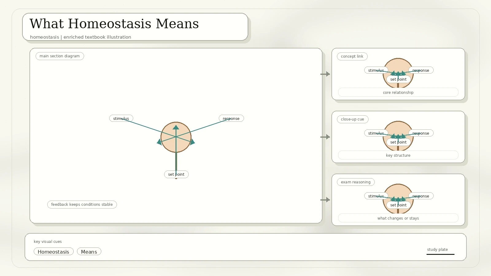
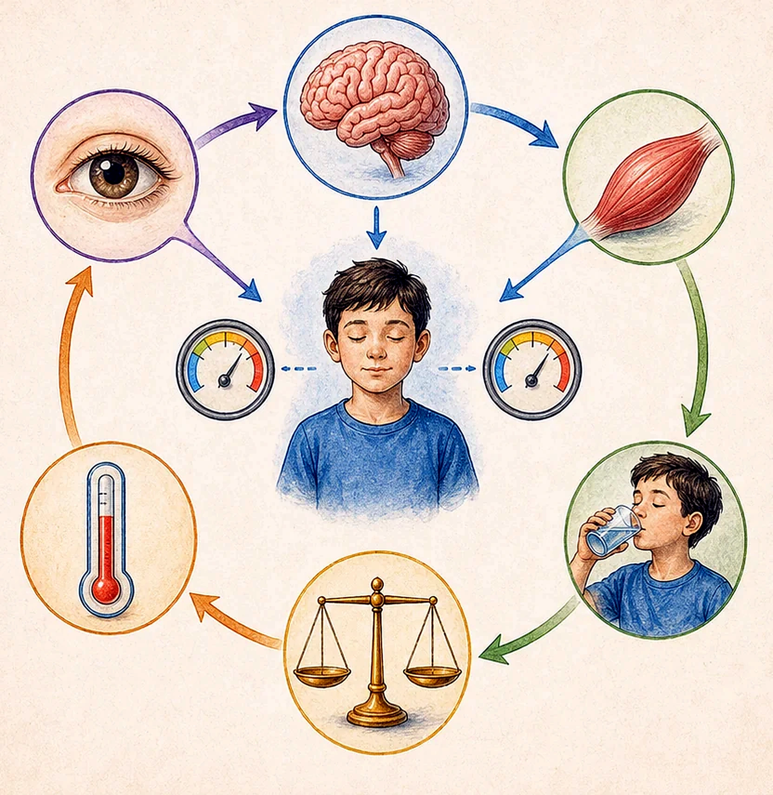
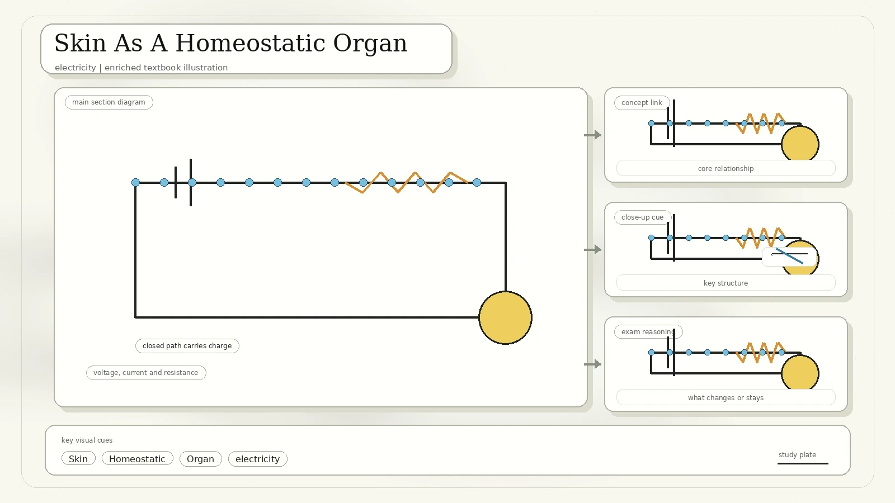
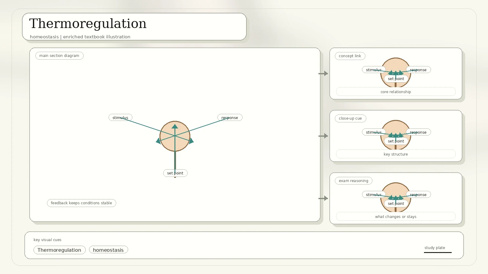
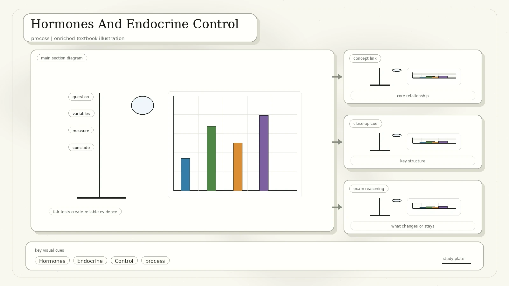
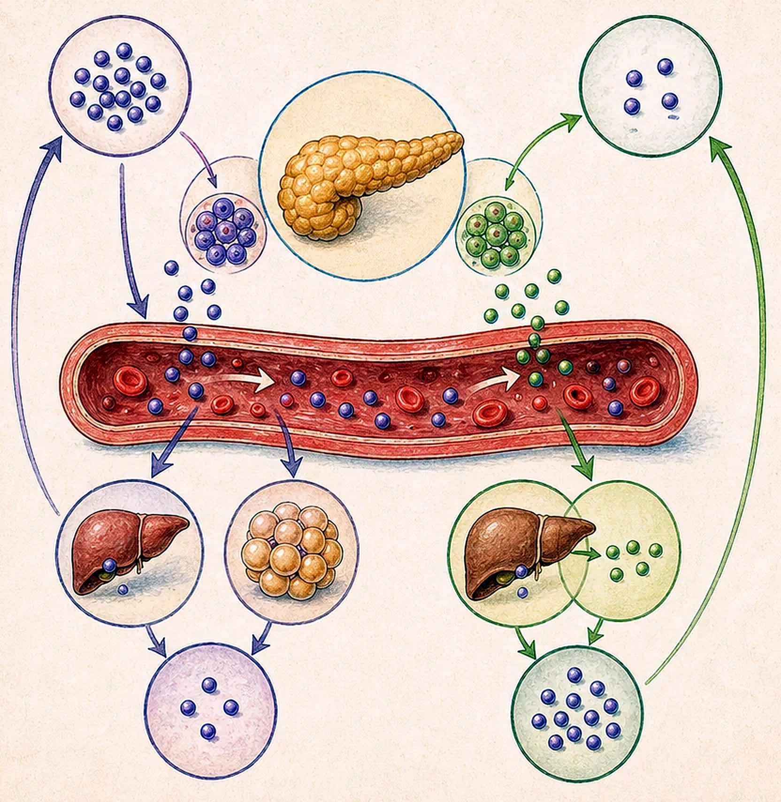
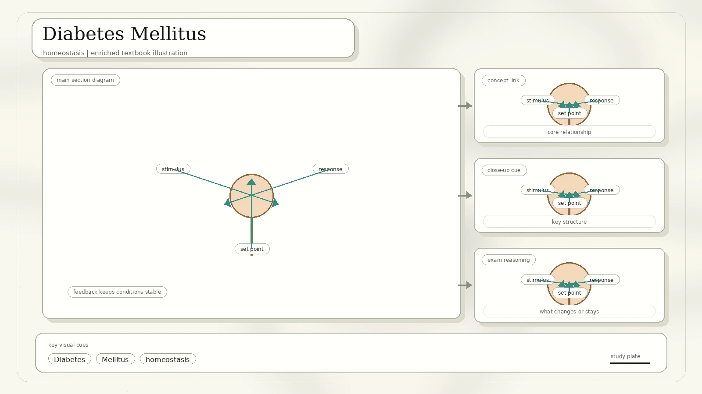
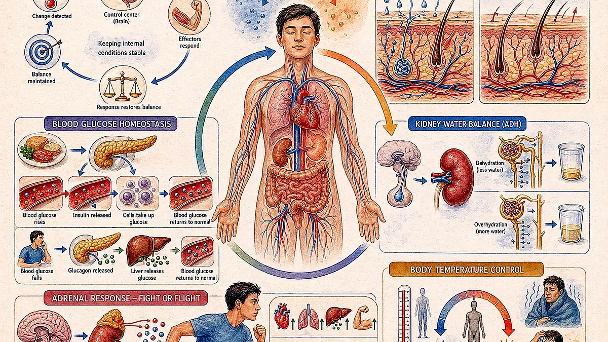
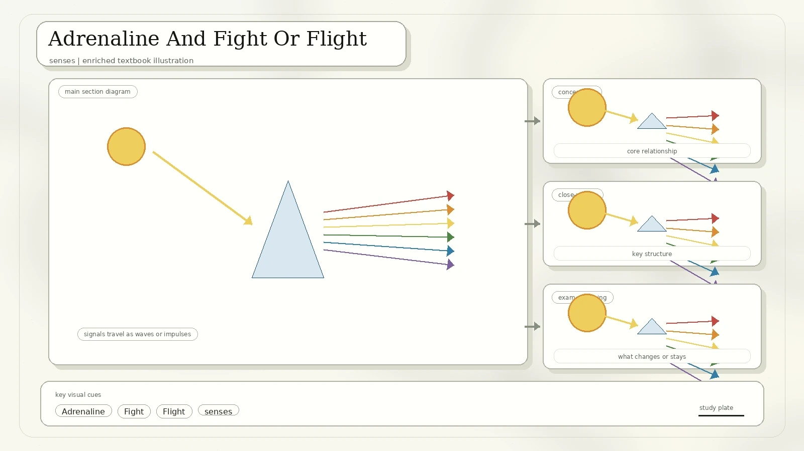

What Homeostasis Means
Homeostasis is the maintenance of a constant internal environment. It allows an organism to survive in a changing external environment.

Maintaining body temperature within a range that allows cells to function effectively.
Maintaining a constant water potential and pH in the internal environment.
Conditions naturally fluctuate around a healthy range; disease occurs when regulation fails beyond limits.
Negative Feedback
Negative feedback is a corrective mechanism in which the body's response restores the normal conditions of the internal environment.
- Stimulus: a change in internal environment.
- Receptor: a sense organ or cell that detects the stimulus.
- Effector: tissue or organ that performs the corrective response.
- Response: the condition returns toward normal and gives negative feedback to the receptor.

Skin As A Homeostatic Organ
The scan identifies two main skin layers and the structures that let the skin sense and regulate temperature.

| Structure | Role In The Scan |
|---|---|
| Epidermis | Outermost layer; forms a waterproof and protective covering. |
| Dermis | Contains hair follicles, sweat glands, sebaceous glands, blood vessels, mechanoreceptors, and thermoreceptors. |
| Arterioles and capillaries | Controlled by nerves; change blood flow through vasoconstriction and vasodilation. |
| Hair follicles and erector muscles | Hair grows from follicles; erector muscles can raise hairs to trap insulating air. |
| Sweat glands | Coiled tubes that secrete sweat through ducts. Sweat contains water, sodium chloride, and small amounts of metabolic waste. |
| Adipose tissue | Fat layer beneath the skin; serves as insulation and padding. |
Smooth muscle in arteriole walls contracts, vessel diameter decreases, blood flow is reduced, and skin may look pale.
Smooth muscle relaxes, vessel diameter increases, and more blood flows through superficial capillaries.
Thermoregulation
Heat is produced by metabolic activities. Most heat is produced by the liver, brain, heart, and contraction of skeletal muscles. Heat can be lost by conduction, convection, radiation, and evaporation of sweat.

| When Body Gains Heat | When Body Loses Heat |
|---|---|
| Skin and hypothalamus thermoreceptors detect rising temperature. | Skin and hypothalamus thermoreceptors detect falling temperature. |
| Arterioles vasodilate; increased blood flow increases heat loss by conduction, convection, and radiation. | Arterioles vasoconstrict; reduced blood flow decreases heat loss. |
| Sweat glands increase sweat production; evaporation removes heat. | Sweat glands stop or reduce sweat production. |
| Hair erector muscles relax so hairs lie flat and trap less insulating air. | Hair erector muscles contract so hairs rise and trap an insulating air layer. |
| Rapid breathing or panting can increase heat loss through exhaled air, especially in animals. | Shivering causes involuntary muscle contraction, increasing respiration and heat production. |
Control center: the hypothalamus receives information from thermoreceptors in the skin and within the hypothalamus itself, then activates mechanisms that promote heat gain or heat loss.
Hormones And Endocrine Control
A hormone is a chemical substance produced by a gland and carried by the blood. It alters the activity of one or more specific target organs.

Hormones are active in very small amounts, then are destroyed by the liver and excreted by the kidneys.
Secrete products through ducts, such as sweat glands and salivary glands.
Secrete products directly into the bloodstream, such as pituitary, thyroid, adrenal glands, and gonads.
The pancreas has both exocrine and endocrine functions.
The Pancreas, Insulin, And Glucagon
The islets of Langerhans are pancreatic regions containing endocrine cells. These cells produce insulin and glucagon, antagonistic hormones that control blood glucose by negative feedback.
- When blood glucose exceeds normal level, more insulin is released and lowers blood glucose.
- When blood glucose falls below normal level, more glucagon is released and raises blood glucose.
- Insulin stimulates body cells to increase glucose uptake by increasing membrane permeability to glucose.
- Insulin stimulates liver and muscle cells to store glucose as glycogen.
- Insulin decreases glucose production from glycogen breakdown and from conversion of fatty acids and amino acids.
- Glucagon stimulates liver cells to convert glycogen, amino acids, fatty acids, and lactic acid into glucose.

Diabetes Mellitus
Diabetes mellitus is a condition in which the body does not produce sufficient insulin or does not respond to insulin.

Excess glucose cannot be completely reabsorbed by the kidneys and is excreted in urine.
Persistent high blood glucose, glucose in urine, excessive urination, excessive thirst, and weight loss.
Poor immune response, increased susceptibility to infections, damaged blood vessels, vision loss, limb sensation loss, kidney failure, and heart failure.
Pancreas fails to produce enough insulin.
Cells fail to respond to insulin properly even when insulin is present.
Osmoregulator ADH
The amount of water in blood is controlled by antidiuretic hormone, or ADH. ADH is produced in the hypothalamus and stored and released from the pituitary gland.

Osmoreceptors in the hypothalamus detect low blood water potential.
The pituitary secretes more ADH into the blood.
ADH acts on distal convoluted tubules and collecting ducts, making the epithelium more permeable to water.
More water is reabsorbed, producing a smaller volume of more concentrated urine. Blood water potential returns to normal.
Adrenaline And Fight Or Flight
Adrenaline is a hormone produced by the adrenal glands above the kidneys. It is responsible for the fight-or-flight response triggered by emotional or physical threats.

In response to stress, the adrenal medulla secretes adrenaline into the blood.
Adrenaline prepares the organism for rapid action by changing heart, lungs, blood glucose, and blood flow patterns.
What To Remember
Homeostasis is maintaining a constant internal environment.
Stimulus, receptor, control center, effector, response, return toward normal.
Islets of Langerhans release insulin and glucagon to regulate blood glucose.
High blood glucose and glucose in urine are key signs; insulin can be used in treatment when insulin is deficient.